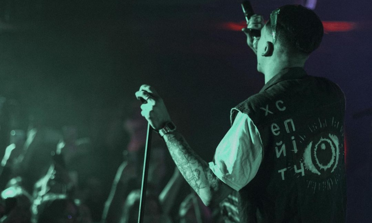

«хейтспіч» — український рок-гурт з Одеси. Проєкт складається з двох музикантів: вокаліста Дмитра Однороженка та саундпродюсера Фіми, який раніше займався музикою під псевдонімом Fimamaru. Проєкт утворився у квітні 2022 року, як відповідь на повномасштабне Російське вторгнення в Україну. Гурт неодноразово блокувався в соцмережах «TikTok» та «Instagram», а їхня пісня «діти сатани», була видалена з YouTube. 29 квітня YouTube поновив пісню на своїй платформі.
